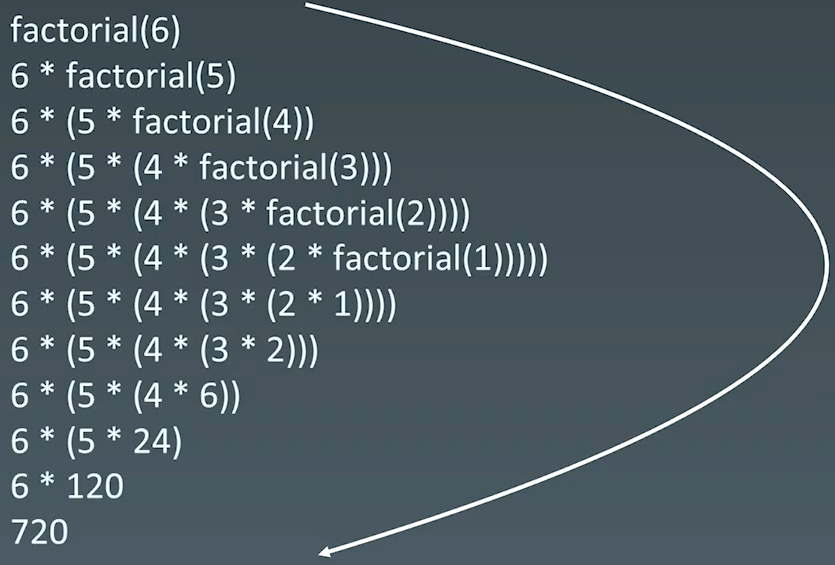

07 递归 | Word count: 2.4k | Reading time: 10min | Post View:
递归 - 循环：通过函数体来进行循环
重复性
1.递归：盗梦空间 1.1 特点
向下进入到不同梦境；向上又回到原来的一层；
通过声音同步回到上一层
每一层的环境和周围的人都是一份拷贝、主角等几人穿越不同层级的梦境（发生和携带变化）
1.2 计算 n! 1 2 3 4 5 def Factorial (n ): if n <= 1 : return 1 return n * Factorial(n - 1 )
递归栈

1.3 递归代码模板 1 2 3 4 5 6 7 8 9 10 11 12 13 def recursion (level, param1, param2, ... ): if level > MAX_LeVEL: process_result return process(level, data, ...) self .recursion(level + 1 , p1, ...)
1.4 思维要点
不要人肉递归（最大误区）
找到最近最简方法，将其拆解成课重复解决的问题（重复子问题）
数学归纳法思维 (n=1, n=2成立，若n成立，能推到出n+1成立)
2.习题 2.1 爬楼梯 https://leetcode.cn/problems/climbing-stairs/
1 2 3 4 5 6 7 8 9 10 11 12 13 14 15 16 17 18 19 20 21 22 23 24 25 26 class Solution {public : int climbStairs (int n) if (n <= 2 ) { return n; } int f1 = 1 ; int f2 = 2 ; int f3 = 3 ; for (int i = 3 ; i <= n; i++) { f3 = f1 + f2; f1 = f2; f2 = f3; } return f3; } };
2.2 生成括号 https://leetcode.cn/problems/generate-parentheses
1 2 3 4 5 6 7 8 9 10 11 12 13 14 15 16 17 18 19 20 21 22 23 24 25 26 27 28 29 30 31 32 33 class Solution {public : vector<string> generateParenthesis (int n) { result.clear (); rhis->_generate(0 , 0 , n, "" ); return result; } void _generate(int left, int right, int num, std::string s) { if (left == num && right == num) { result.emplace_back (s); return ; } if (left < num) this ->_generate(left + 1 , right, num, s + "(" ); if (left > right) this ->_generate(left, right + 1 , num, s + ")" ); } private : std::vector<std::string> result; };
2.3 验证二叉搜索树 98. 验证二叉搜索树 - 力扣（LeetCode）
1 2 3 4 5 6 7 8 9 10 11 12 13 14 15 16 17 18 19 20 21 22 23 24 25 26 27 28 29 30 31 32 33 34 35 36 37 38 39 40 class Solution {public : bool isValidBST (TreeNode* root) if (root == nullptr ) { return true ; } if (!this ->isValidBST (root->left)) { return false ; } if (root->val <= m_last) { return false ; } else { m_last = root->val; } if (!this ->isValidBST (root->right)) { return false ; } return true ; } private : long m_last = LONG_MIN; };
2.4 二叉树最大深度 104. 二叉树的最大深度 - 力扣（LeetCode）
1 2 3 4 5 6 7 8 9 10 11 class Solution {public : int maxDepth (TreeNode* root) if (!root) { return 0 ; } return std::max (maxDepth (root->left), maxDepth (root->right)) + 1 ; } };
2.5 二叉树的最小深度 111. 二叉树的最小深度 - 力扣（LeetCode）
1 2 3 给定一个二叉树，找出其最小深度。 最小深度是从根节点到最近叶子节点的最短路径上的节点数量。 说明：叶子节点是指没有子节点的节点。
1 2 3 4 5 6 7 8 9 10 11 12 13 14 15 16 17 18 19 20 21 22 class Solution {public : int minDepth (TreeNode* root) if (!root) { return 0 ; } int deep = 0 ; int left_deep = minDepth (root->left); int right_deep = minDepth (root->right); if (!root->left || !root->right) { deep = left_deep + right_deep + 1 ; } else { deep = std::min (left_deep, right_deep) + 1 ; } return deep; } };
2.6 二叉树的序列化和反序列化 297. 二叉树的序列化与反序列化 - 力扣（LeetCode）
1 2 3 4 5 序列化是将一个数据结构或者对象转换为连续的比特位的操作，进而可以将转换后的数据存储在一个文件或者内存中，同时也可以通过网络传输到另一个计算机环境，采取相反方式重构得到原数据。 请设计一个算法来实现二叉树的序列化与反序列化。这里不限定你的序列 / 反序列化算法执行逻辑，你只需要保证一个二叉树可以被序列化为一个字符串并且将这个字符串反序列化为原始的树结构。 提示: 输入输出格式与 LeetCode 目前使用的方式一致，详情请参阅 LeetCode 序列化二叉树的格式。你并非必须采取这种方式，你也可以采用其他的方法解决这个问题。
1 2 3 4 5 6 7 8 9 10 11 12 13 14 15 16 17 18 19 20 21 22 23 24 25 26 27 28 29 30 31 32 33 34 35 36 37 38 39 40 41 42 43 44 45 46 47 48 49 50 51 52 53 54 55 56 57 58 59 60 61 62 63 64 65 66 67 class Codec {public : string serialize (TreeNode* root) { std::string ans; this ->pre_order (root, ans); return ans; } void pre_order (TreeNode* root, std::string& str) if (root == nullptr ) { str += "None," ; return ; } str += std::to_string (root->val) + "," ; this ->pre_order (root->left, str); this ->pre_order (root->right, str); } TreeNode* deserialize (string data) { std::list<std::string> data_array; std::string str; for (auto & ch : data) { if (ch == ',' ) { data_array.push_back (str); str.clear (); } else { str.push_back (ch); } } if (!str.empty ()) { data_array.push_back (str); str.clear (); } return this ->pre_create_tree (data_array); } TreeNode* pre_create_tree (std::list<std::string>& data_array) { if (data_array.front () == "None" ) { data_array.erase (data_array.begin ()); return nullptr ; } TreeNode* root = new TreeNode (std::stoi (data_array.front ().c_str ())); data_array.erase (data_array.begin ()); root->left = this ->pre_create_tree (data_array); root->right = this ->pre_create_tree (data_array); return root; } };
2.7 公共祖先 236. 二叉树的最近公共祖先 - 力扣（LeetCode）
1 2 3 给定一个二叉树, 找到该树中两个指定节点的最近公共祖先。 百度百科中最近公共祖先的定义为：“对于有根树 T 的两个节点 p、q，最近公共祖先表示为一个节点 x，满足 x 是 p、q 的祖先且 x 的深度尽可能大（一个节点也可以是它自己的祖先）。”
1 2 3 4 5 6 7 8 9 10 11 12 13 14 15 16 17 18 19 20 21 22 23 24 25 26 27 28 29 30 class Solution {public : TreeNode* lowestCommonAncestor (TreeNode* root, TreeNode* p, TreeNode* q) { TreeNode* father = nullptr ; this ->dfs (root, p, q, father); return father; } private : bool dfs (TreeNode* root, TreeNode* p, TreeNode* q, TreeNode*& father) if (root == nullptr ) { return false ; } bool left = dfs (root->left, p, q, father); bool right = dfs (root->right, p, q, father); if ((left && right) || ((root->val == p->val || root->val == q->val) && (left || right))) { father = root; } return left || right || (root->val == p->val || root->val == q->val); } };
2.8 先序中序遍历构造树 105. 从前序与中序遍历序列构造二叉树 - 力扣（LeetCode）
1 给定两个整数数组 preorder 和 inorder ，其中 preorder 是二叉树的先序遍历， inorder 是同一棵树的中序遍历，请构造二叉树并返回其根节点。
一颗树的先序序列和中序序列能确定这棵树。
先序序列：根，左，右
中序序列：左，根，右
后序序列：左，右，根
表示子树不存在：
序列长度为零，代表子树不存在
给定起始位置索引和终止位置索引。起始位置和终止位置不合法，也就是终止位置大于起始位置来代表序列不存在，即代表字数不存在
1 2 3 4 5 6 7 8 9 10 11 12 13 14 15 16 17 18 19 20 21 22 23 24 25 26 27 28 29 30 31 32 33 34 35 36 37 class Solution {public : TreeNode* buildTree (vector<int >& preorder, vector<int >& inorder) { return this ->pre_inorder_build_tree (preorder, 0 , preorder.size () - 1 , inorder, 0 , inorder.size () - 1 ); } private : TreeNode* pre_inorder_build_tree (std::vector<int >& preorder, int pre_start_idx, int pre_end_idx, std::vector<int >& inorder, int in_start_idx, int in_end_idx) if (pre_start_idx > pre_end_idx) { return nullptr ; } TreeNode* root = new TreeNode (preorder[pre_start_idx]); int root_idx = in_start_idx; for (; root_idx <= in_end_idx; root_idx++) { if (root->val == inorder[root_idx]) { break ; } } int left_lens = root_idx - in_start_idx; root->left = this ->pre_inorder_build_tree (preorder, pre_start_idx + 1 , pre_start_idx + left_lens, inorder, in_start_idx, root_idx - 1 ); root->right = this ->pre_inorder_build_tree (preorder, pre_start_idx + left_lens + 1 , pre_end_idx, inorder, root_idx + 1 , in_end_idx); return root; } };
2.9 组合 77. 组合 - 力扣（LeetCode）
1 2 给定两个整数 n 和 k，返回范围 [1, n] 中所有可能的 k 个数的组合。 你可以按 任何顺序 返回答案。
1 2 3 4 5 6 7 8 9 10 11 12 13 14 15 16 17 18 19 20 21 22 23 24 25 26 27 28 29 30 class Solution {public : vector<vector<int >> combine (int n, int k) { std::vector<std::vector<int >> ans; this ->dfs (1 , n, k, ans); return ans; } private : void dfs (int curr, int n, int k, std::vector<std::vector<int >>& ans) if (m_tmp.size () + (n - curr + 1 ) < k) { return ; } if (m_tmp.size () == k) { ans.push_back (m_tmp); return ; } m_tmp.push_back (curr); this ->dfs (curr + 1 , n, k, ans); m_tmp.pop_back (); this ->dfs (curr + 1 , n, k, ans); } std::vector<int > m_tmp; };